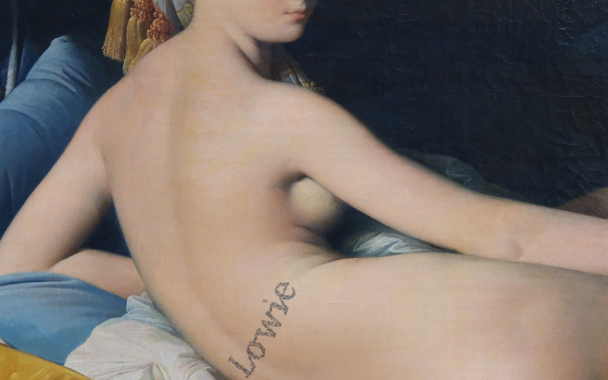
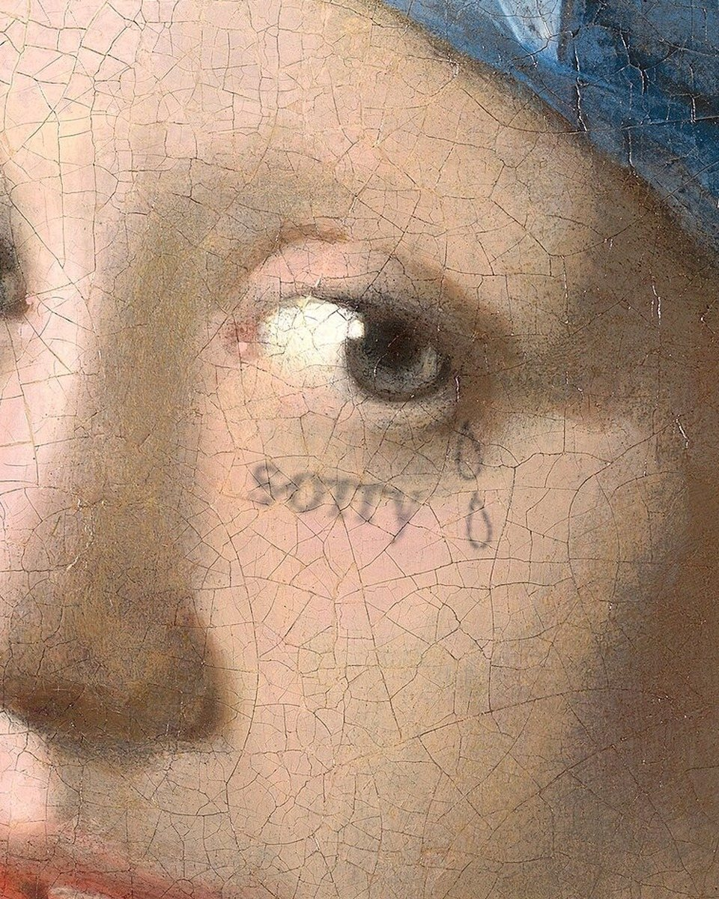
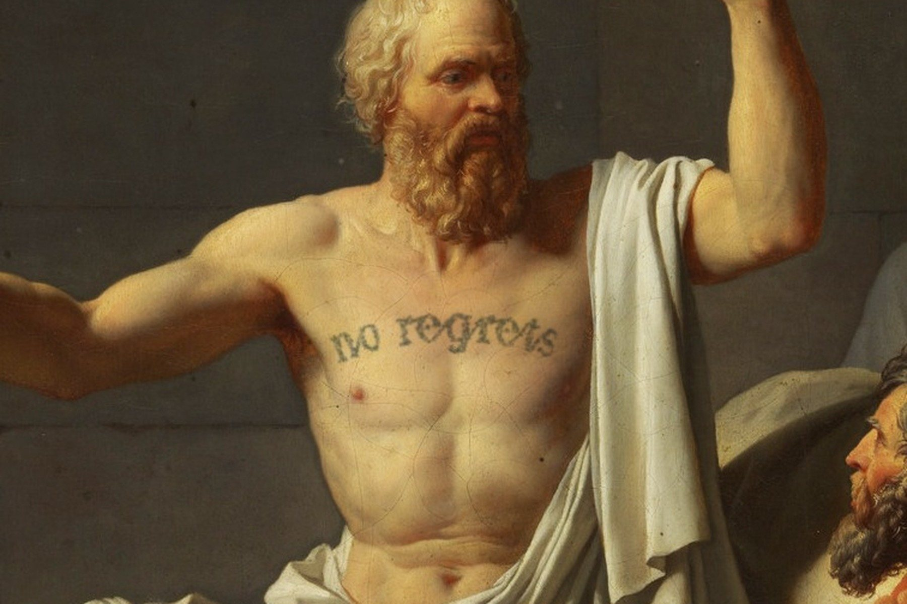
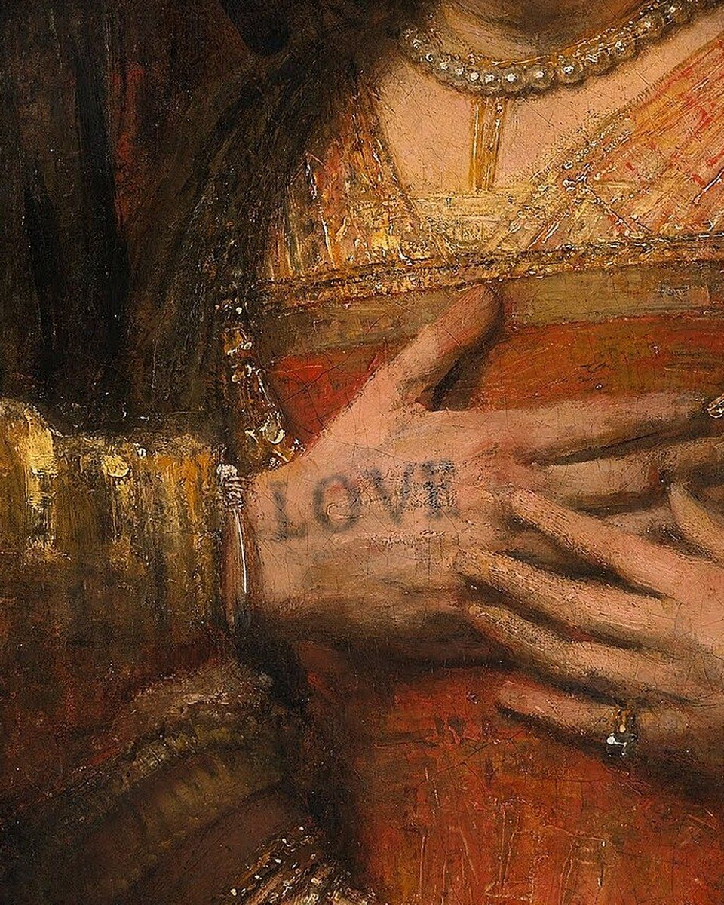

So it goes…
Download Lowie, free (OFL) · Specimen · Lowie Worn
- La Grande Odalisque, Jean-Auguste-Dominique Ingres, 1814. Louvre, Paris
- Girl with a Pearl Earring, Johannes Vermeer, c. 1665. Mauritshuis, The Hague
- The Milkmaid, Johannes Vermeer, c. 1660. Rijksmuseum, Amsterdam
- The Death of Socrates, Jacques-Louis David, 1787. The Met, New York
- The Jewish Bride, Rembrandt van Rijn, c. 1665. Rijksmuseum, Amsterdam
- The Musicians, Caravaggio, 1597. The Met, New York
- The Fall of Man, Cornelis van Haarlem, 1592. Rijksmuseum, Amsterdam
- Paintings in the public domain. Lowie 0.7 © 2026 Ben Dryden, SIL Open Font License 1.1.